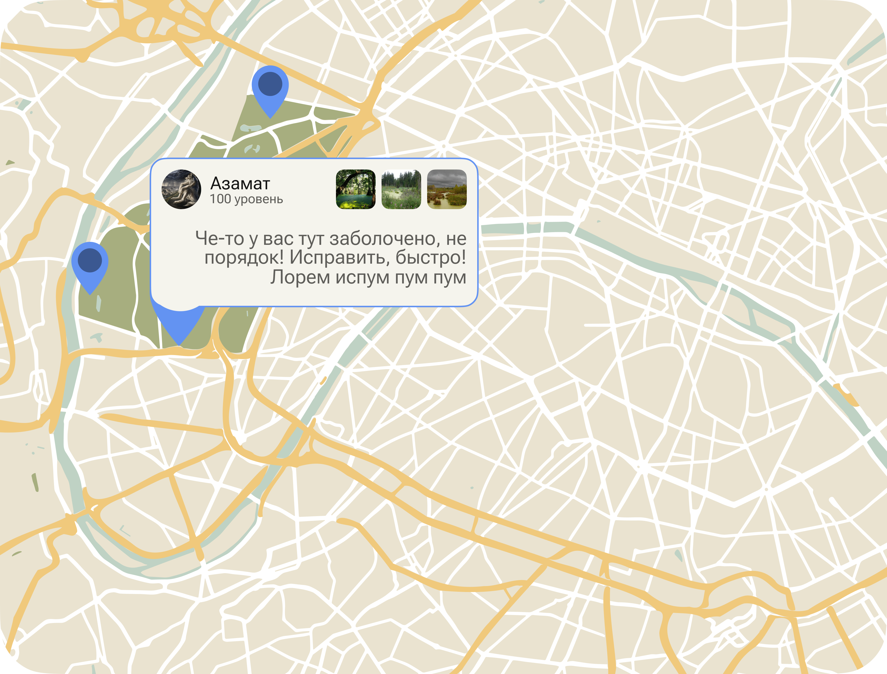

Проблема
Высокий барьер подачи обращения
При выявлении нарушения гражданину приходится тратить время на поиск порядка подачи заявления и определение ответственной структуры.
Цифровой сервис для фиксации экологических нарушений и передачи обращений ответственным участникам системы.
Главная задача
EcoSignal помогает гражданам быстро направлять обращения о состоянии природных объектов, а органам надзора и администраторам получать структурированную информацию для последующей обработки.

О проекте
Сервис предназначен для фиксации нарушений, связанных с состоянием природных объектов, и последующей передачи обращений ответственным участникам системы.
Проблема
При выявлении нарушения гражданину приходится тратить время на поиск порядка подачи заявления и определение ответственной структуры.
Решение
EcoSignal объединяет фиксацию проблемы, передачу материалов и дальнейшую маршрутизацию обращения в рамках единого сервиса.
Результат
Координаты, описание и медиаматериалы позволяют ответственным участникам быстрее оценивать ситуацию и организовывать реакцию.
Как это работает
Пользователь передаёт сигнал через сервис, после чего система обеспечивает его проверку, маршрутизацию и дальнейшую координацию.
Фиксация загрязнения, свалки, повреждения зелёной зоны или иного нарушения.
Добавление описания, координат, фотографий и видеоматериалов при наличии.
Подтверждение обращения и определение ответственного органа либо направления обработки.
Оценка приоритетности, формирование плана действий и уведомление пользователей.
Возможности платформы
Функции EcoSignal охватывают как подачу обращений, так и их последующую обработку, приоритизацию и информирование пользователей.
Просмотр проблемных точек и обращений в едином картографическом интерфейсе.
Передача фотографий и видео для подтверждения зафиксированного нарушения.
Указание ответственного органа либо передача обращения на распределение.
Сортировка обращений и выделение случаев, требующих более быстрого реагирования.
Информирование пользователей, находящихся в заданной территориальной зоне.
Работа с обращениями как в списочном формате, так и на карте.
Для кого создан сервис
Направляют обращения, отслеживают ситуацию на карте и получают уведомления о потенциально опасных состояниях рядом с собой.
Получают относящиеся к ним обращения, анализируют их, задают приоритет и координируют необходимые меры реагирования.
Подтверждают заявки, назначают ответственные органы и контролируют целостность общего потока обращений.
Типовые кейсы
Следующий шаг
Помогайте выявлять экологические нарушения, направлять обращения и делать реагирование на проблемы природных объектов более оперативным и прозрачным.